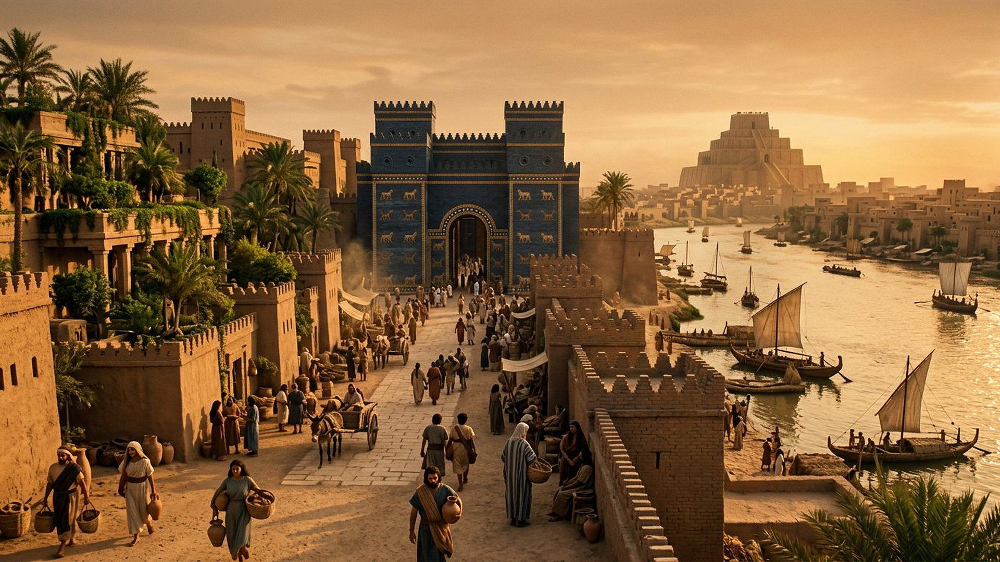
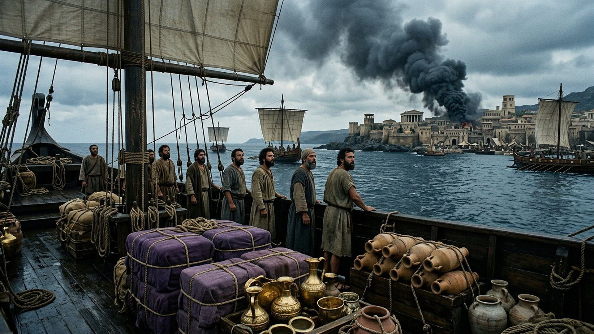
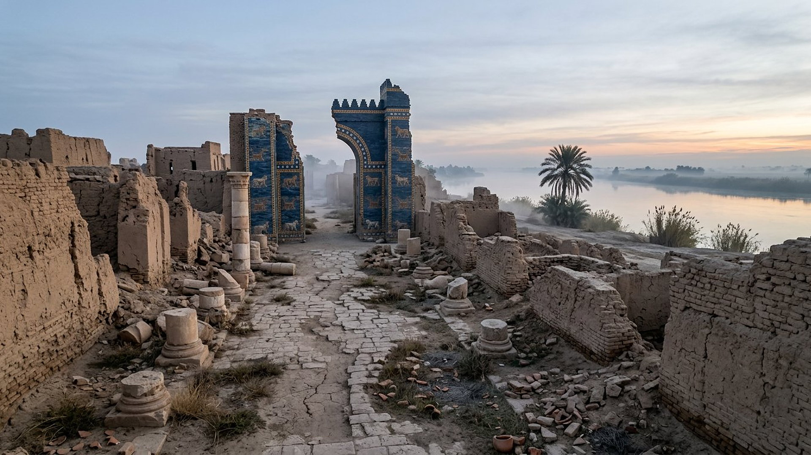

Salle 36 — Révélation 17-18 À VENIR
Babylone la Grande : la chute de la ville-empire
« Elle est tombée, elle est tombée, Babylone la grande ! » — Révélation 18:2 (d’après Segond 1910)
Reconstitution numérique — Babylone antique dans sa splendeur : le langage visuel que reprendra la vision.
Une ville qui n’est pas d’abord une ville
La Révélation présente une femme assise sur une bête écarlate, vêtue de pourpre, parée d’or et de pierres précieuses, tenant une coupe. Elle est appelée « Babylone la Grande, la mère des prostituées et des abominations de la terre » (Révélation 17:1-5). Mais le texte lui-même déplace le regard : « les eaux que tu as vues (…) ce sont des peuples, des foules, des nations et des langues » (17:15), et « la femme que tu as vue, c’est la grande ville qui a la royauté sur les rois de la terre » (17:18).
Dans la lecture retenue par ce musée, cette ville-empire désigne l’ensemble mondial des fausses religions : un système qui, de Babylone antique aux religions d’aujourd’hui, prétend parler au nom de Dieu tout en s’alliant aux pouvoirs politiques et en enrichissant les marchands. Ce sont des structures et des enseignements qui sont jugés — jamais les fidèles sincères, que le texte appelle au contraire à sortir : « Sortez d’elle, mon peuple » (Révélation 18:4). Aucune religion moderne n’est nommée dans cette salle, et aucune date n’est avancée.
Le récit en cinq temps
Avancez dans la vision, d’une station à l’autre.

Le banc des preuves : le nom, la ville, le débat
FAIT ARCHÉOLOGIQUE
Babylone, la capitale devenue ruines (EV-45)
À 85 km au sud de Bagdad, les ruines de Babylone — capitale de l’empire néo-Babylonien de 626 à 539 av. n. è., sous Hammurabi puis Nabuchodonosor — sont inscrites au patrimoine mondial de l’UNESCO (liste n° 278) : murs, portes, palais et temples, dont la célèbre porte bleue émaillée. Isaïe 13 et Jérémie 50-51 avaient annoncé la chute et la désolation durable de cette capitale ; c’est ce langage de chute d’une ville-empire universelle que la Révélation reprend pour sa « Babylone la Grande ».
LECTURE PROPHÉTIQUE
Pourquoi un système religieux mondial ?
Trois indices internes guident la lecture retenue : la ville « règne sur les rois » sans être elle-même un pouvoir politique ; elle est assise sur « des peuples, des nations » — donc mondiale, pas locale ; et Dieu appelle « mon peuple » à en sortir, ce qui suppose des croyants sincères à l’intérieur du système, distincts du système lui-même. La chute est alors opérée par les pouvoirs politiques qu’elle chevauchait (Révélation 17:16-17), au début de la grande tribulation (voir salle 15).
DÉBATTU
Les autres lectures, honnêtement
Beaucoup d’historiens lisent dans Babylone la Grande une image codée de la Rome de Néron et de Domitien : ville aux sept collines, persécutrice des premiers chrétiens. D’autres y voient Jérusalem apostate, d’autres encore toute ville-empire corrompue, passée ou future. Ces lectures saisissent des échos réels du Ier siècle ; le musée expose ailleurs (salle 02) comment la Babylone historique est tombée. Le choix présenté ici — un empire religieux mondial futur — est signalé comme lecture prophétique, non comme un fait établi.
Quatre clés pour ne pas se tromper de cible
1. Un système, jamais des fidèles
« Babylone la Grande » juge des institutions et des enseignements qui se sont prostitués aux pouvoirs. Les personnes sincères de toutes les religions sont, dans le texte, celles que Dieu appelle à sortir — pas des ennemis à mépriser.
2. Aucune religion nommée
La vision ne désigne aucune confession moderne. Nommer une Église ou une religion précise serait ajouter au texte — et contredire l’appel adressé aux fidèles sincères de partout.
3. Une chute soudaine, pas un déclin
Le texte insiste : « en une seule heure » (Révélation 18:10, 17, 19). Richesse et influence semblent intactes la veille ; la soudaineté fait partie du signe, comme aux jours de Noé (salle 35).
4. Aucune date, un ordre seulement
La salle 15 replace cette chute dans une séquence : proclamation « paix et sécurité », chute de Babylone la Grande, attaque de Gog (salle 31), Harmaguédon, mille ans (salle 32). Une séquence n’est pas un calendrier.
Prescience n’est pas fatalité — « sortez d’elle »
L’annonce de la chute s’accompagne d’un appel, donc d’un choix : « Sortez d’elle, mon peuple, afin de ne pas participer à ses péchés » (Révélation 18:4). Personne n’est enfermé dans la ville par naissance ou par destin ; la prescience qui avertit laisse la porte ouverte, exactement comme l’arche de la salle précédente.

Salle 15 : ce qui vient, dans l’ordre · Salle 14 : la bête écarlate · Salle 35 : comme aux jours de Noé
Écouter la salle
Transcription de la narration
Bienvenue dans cette nouvelle salle du musée. Elle présente une grande ville portuaire de l’Antiquité, célèbre pour ses richesses, ses tissus pourpres et son commerce maritime. Vous suivrez un récit en cinq temps : la splendeur, les marchands en mer, un appel à quitter la ville, un changement soudain, puis le silence. Vous verrez aussi des vues des ruines de Babylone, en Iraq, avec sa porte bleue et sa large plaine traversée par un fleuve. La visite compare les images anciennes et les vestiges que l’on peut encore observer aujourd’hui.